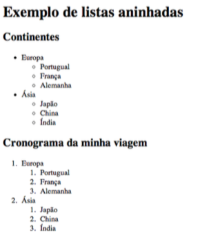
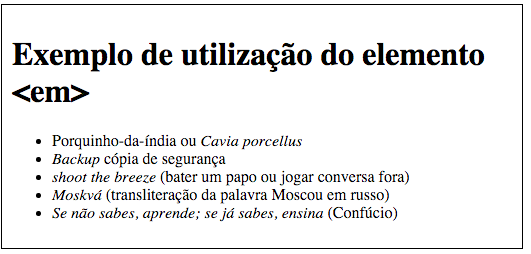
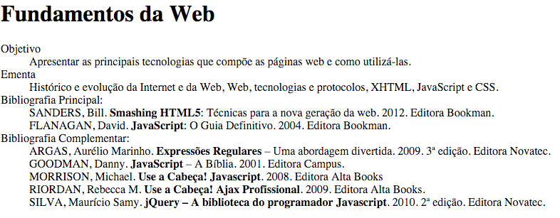
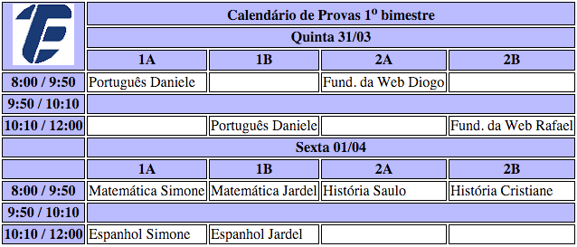
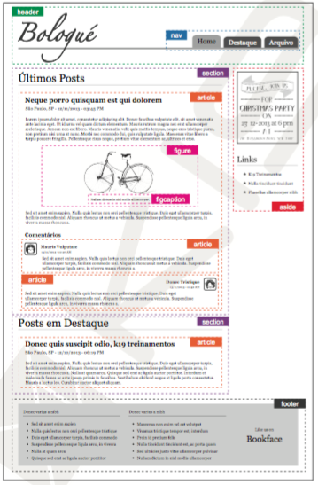

Exercício com listas aninhadas
Exercício com texto em itálico
Exercício com listas
Exercício com tabelas
Site
- Abra o Notepad++, Sublime ou Atom.
- Crie um documento HTML com aparência semelhante a figura abaixo. Use tags <p> </p>, <hr /> e <br />, além das tags de citação.
- Salve como exer1.html

Exercício 1
Voltar para o topo
- Abra o Notepad++, Sublime ou Atom.
- Crie um documento HTML com aparência semelhante a figura abaixo. Use tags <p> </p> e <br />. Mude a fonte com apoio de CSS (Tahoma ou sans-serif)
- Salve como exer2.html

Exercício 2
Voltar para o topo
- Abra o Notepad++, Sublime ou Atom.
- Crie um documento HTML com aparência semelhante a figura abaixo.
- Salve como exer3.html

Exercício 3
Voltar para o topo
- Abra o Notepad++, Sublime ou Atom.
- Crie um documento HTML com aparência semelhante a figura abaixo.
- Salve como exer4.html

Exercício 4
Voltar para o topo
- Abra o Notepad++, Sublime ou Atom.
- Crie um documento HTML com aparência semelhante a figura abaixo.
- Salve como exer4.html

Exercício 5
Voltar para o topo